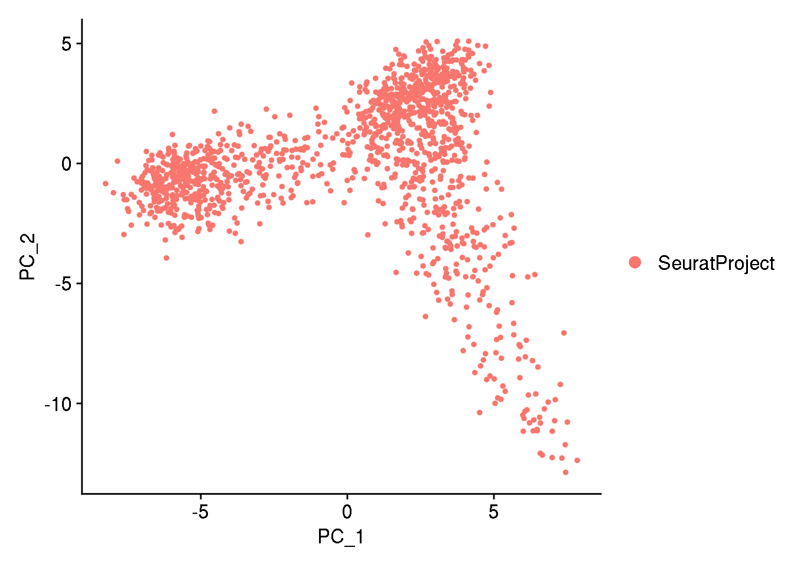
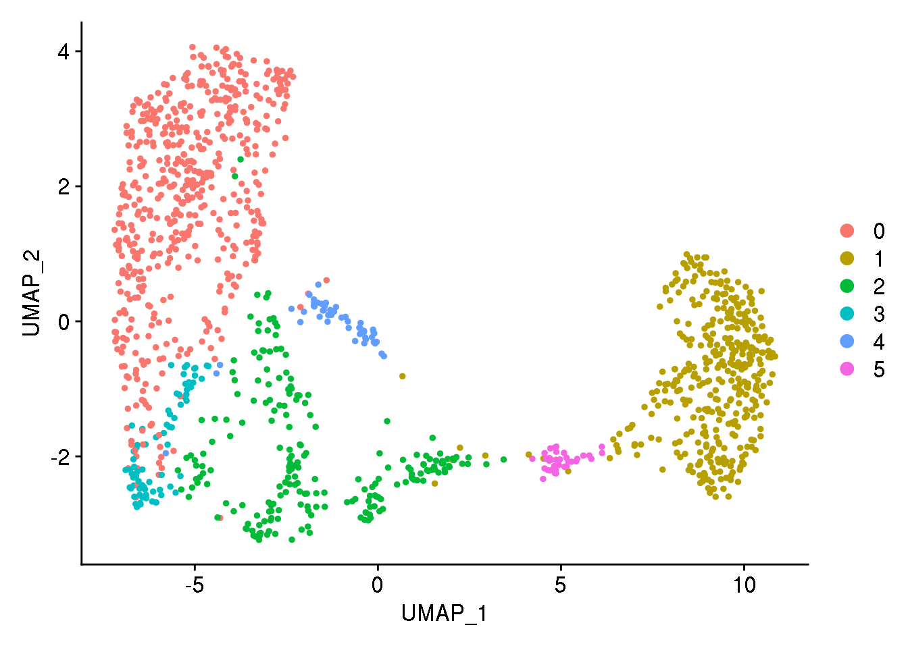
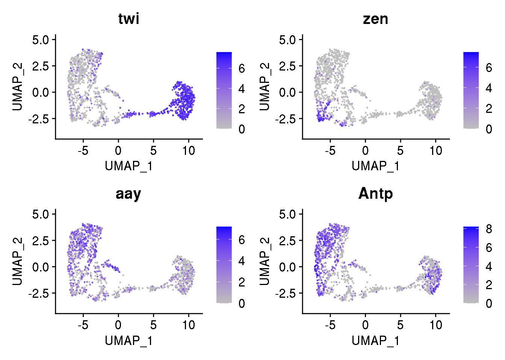
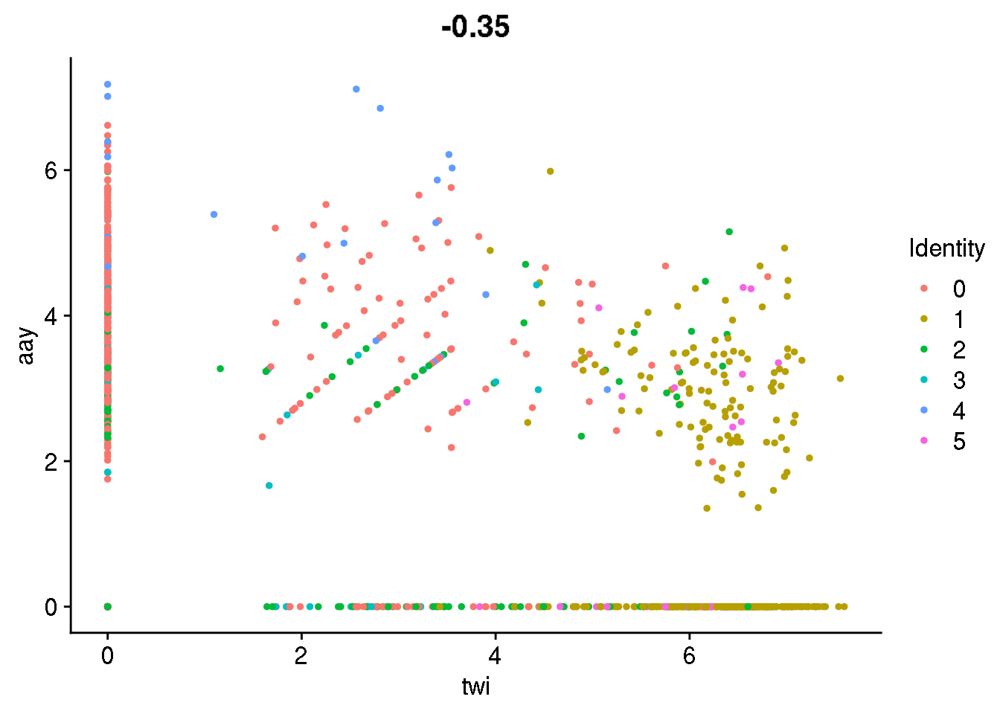
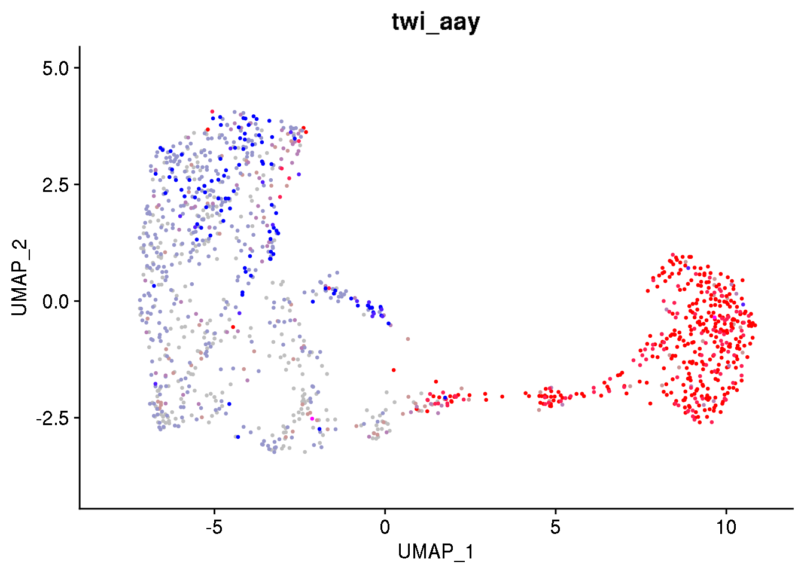
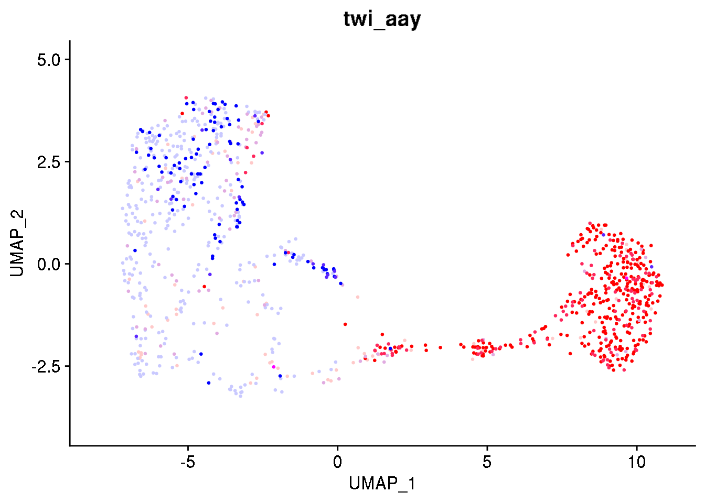

3 Basic vizualization
In this section, we will perfome some basic analyses of the dataset provided in Nitizan et al. using Seurat. We will visualize the cells in a reduced space using UMAP and visualize the expression of some genes. If you are not familiar with Seurat object and scRNAseq pre-processing, you can look at yesterday’s tutorial, which is available on github.
3.1 Import data in Seurat
We import the log-normalized high quality cells as a dataframe and then convert the dataframe to a Seurat object.
log.nrmlz.matrix <- read.table("data/data_day2/drosophila_scRNAseq/dge_normalized.txt", sep='\t', row.names=1)
dim(log.nrmlz.matrix)## [1] 1963 1297## GTACTAATTACN_2 AGGCTAATGGAC_3 TAGACAAAAGCT_4 TCTACTAGTGTN_5
## 128up 2.570 2.509 0.000 0.000
## 140up 1.160 3.007 0.000 0.000
## 14-3-3epsilon 8.838 8.788 8.843 8.869We have 1963 genes and 1297 cells
3.2 A quick reminder on SeuratObject
In Seurat, data are organised in different compartements (slots), which contains them-selves several compartements, which can them-selves contain sub compartments…
## [1] "assays" "meta.data" "active.assay" "active.ident" "graphs"
## [6] "neighbors" "reductions" "images" "project.name" "misc"
## [11] "version" "commands" "tools"Each compartment can be used to store:
- data from multiple modalities, such as RNAseq (slot
assays, sub-slotRNA), ATAC-seq… - results of analyses: dimension reduction, clustering …
- etc.
You navigate through this hierarchy using @ and $ signs.
## [1] "counts" "data" "scale.data" "key"
## [5] "assay.orig" "var.features" "meta.features" "misc"If you want to have a closer look at the data structure of the Seurat object, the R command str() might be very helpful:
## Formal class 'Seurat' [package "Seurat"] with 13 slots
## ..@ assays :List of 1
## .. ..$ RNA:Formal class 'Assay' [package "Seurat"] with 8 slots
## .. .. .. ..@ counts :Formal class 'dgCMatrix' [package "Matrix"] with 6 slots
## .. .. .. .. .. ..@ i : int [1:1194477] 0 1 2 3 4 7 8 11 15 16 ...
## .. .. .. .. .. ..@ p : int [1:1298] 0 1445 2686 3841 4946 6084 7162 8255 9308 10342 ...
## .. .. .. .. .. ..@ Dim : int [1:2] 1963 1297
## .. .. .. .. .. ..@ Dimnames:List of 2
## .. .. .. .. .. .. ..$ : chr [1:1963] "128up" "140up" "14-3-3epsilon" "14-3-3zeta" ...
## .. .. .. .. .. .. ..$ : chr [1:1297] "GTACTAATTACN_2" "AGGCTAATGGAC_3" "TAGACAAAAGCT_4" "TCTACTAGTGTN_5" ...
## .. .. .. .. .. ..@ x : num [1:1194477] 2.57 1.16 8.84 5.94 3.44 ...
## .. .. .. .. .. ..@ factors : list()
## .. .. .. ..@ data :Formal class 'dgCMatrix' [package "Matrix"] with 6 slots
## .. .. .. .. .. ..@ i : int [1:1194477] 0 1 2 3 4 7 8 11 15 16 ...
## .. .. .. .. .. ..@ p : int [1:1298] 0 1445 2686 3841 4946 6084 7162 8255 9308 10342 ...
## .. .. .. .. .. ..@ Dim : int [1:2] 1963 1297
## .. .. .. .. .. ..@ Dimnames:List of 2
## .. .. .. .. .. .. ..$ : chr [1:1963] "128up" "140up" "14-3-3epsilon" "14-3-3zeta" ...
## .. .. .. .. .. .. ..$ : chr [1:1297] "GTACTAATTACN_2" "AGGCTAATGGAC_3" "TAGACAAAAGCT_4" "TCTACTAGTGTN_5" ...
## .. .. .. .. .. ..@ x : num [1:1194477] 2.57 1.16 8.84 5.94 3.44 ...
## .. .. .. .. .. ..@ factors : list()
## .. .. .. ..@ scale.data : num[0 , 0 ]
## .. .. .. ..@ key : chr "rna_"
## .. .. .. ..@ assay.orig : NULL
## .. .. .. ..@ var.features : logi(0)
## .. .. .. ..@ meta.features:'data.frame': 1963 obs. of 0 variables
## .. .. .. ..@ misc : NULL
## ..@ meta.data :'data.frame': 1297 obs. of 3 variables:
## .. ..$ orig.ident : Factor w/ 1 level "SeuratProject": 1 1 1 1 1 1 1 1 1 1 ...
## .. ..$ nCount_RNA : num [1:1297] 5057 4711 4728 4562 4569 ...
## .. ..$ nFeature_RNA: int [1:1297] 1445 1241 1155 1105 1138 1078 1093 1053 1034 1047 ...
## ..@ active.assay: chr "RNA"
## ..@ active.ident: Factor w/ 1 level "SeuratProject": 1 1 1 1 1 1 1 1 1 1 ...
## .. ..- attr(*, "names")= chr [1:1297] "GTACTAATTACN_2" "AGGCTAATGGAC_3" "TAGACAAAAGCT_4" "TCTACTAGTGTN_5" ...
## ..@ graphs : list()
## ..@ neighbors : list()
## ..@ reductions : list()
## ..@ images : list()
## ..@ project.name: chr "SeuratProject"
## ..@ misc : list()
## ..@ version :Classes 'package_version', 'numeric_version' hidden list of 1
## .. ..$ : int [1:3] 3 2 3
## ..@ commands : list()
## ..@ tools : list()The structure of the Seurat object also reflects the pre-processing steps. The scRNAseq workflow consists of 3 main steps :
- start with raw expression matrix (UMIs after sequencing) and filter out “low quality cells” : data are stored in the compartement
counts; - log-normalize the data: to correct for sequencing biais :
data - perform a dimension reduction such as PCA to reduce the computation time and unnecessary information. PCA requires the data to be normalized and scaled :
scale.data.
3.3 Perform dimension reductions
When analysing scRNAseq data, you will usually perform some clustering to identify sub-populations and use some technique for visualization (e.g. UMAP). These analyses are performed on a lower dimensional space. Here we perform a PCA on the list of highly variable genes provided by the authors.

## [1] 49.57188nPC = 35 # number of PC kept for the analysis
n.neighbours = 15
resol = 0.4 # impact the number of clusters
# k-nn graph
dataset <- FindNeighbors(dataset, k.param = n.neighbours,dims = 1:nPC) ## Computing nearest neighbor graph## Computing SNN## Modularity Optimizer version 1.3.0 by Ludo Waltman and Nees Jan van Eck
##
## Number of nodes: 1297
## Number of edges: 52276
##
## Running Louvain algorithm...
## Maximum modularity in 10 random starts: 0.8298
## Number of communities: 6
## Elapsed time: 0 seconds## Warning: The default method for RunUMAP has changed from calling Python UMAP via reticulate to the R-native UWOT using the cosine metric
## To use Python UMAP via reticulate, set umap.method to 'umap-learn' and metric to 'correlation'
## This message will be shown once per session## 13:24:14 UMAP embedding parameters a = 0.9922 b = 1.112## 13:24:14 Read 1297 rows and found 35 numeric columns## 13:24:14 Using Annoy for neighbor search, n_neighbors = 30## 13:24:14 Building Annoy index with metric = cosine, n_trees = 50## 0% 10 20 30 40 50 60 70 80 90 100%## [----|----|----|----|----|----|----|----|----|----|## **************************************************|
## 13:24:14 Writing NN index file to temp file /tmp/Rtmp0xxBlD/file1f2e4464a8be8c
## 13:24:14 Searching Annoy index using 1 thread, search_k = 3000
## 13:24:15 Annoy recall = 100%
## 13:24:15 Commencing smooth kNN distance calibration using 1 thread
## 13:24:16 Initializing from normalized Laplacian + noise
## 13:24:16 Commencing optimization for 500 epochs, with 50690 positive edges
## 13:24:20 Optimization finished
With the function FeaturePlot you can visualize the expression of some gene of interest on th UMAP:
FeaturePlot(object = dataset,
features = c('twi','zen','aay', 'Antp'),
cols = c("grey", "blue"),
reduction = "umap",
pt.size = 0.2)
You can define here two genes that you wish to see of the next plots (so you don’t have to change the gene names in the plot functions).
Let’s have a look at the correlation between these two genes:

p <- FeaturePlot(object = dataset,
features = c(gene1, gene2),
cols = c('grey', 'red', 'blue'),
reduction = "umap",
order = TRUE,
pt.size = 0.5,
combine = FALSE,
blend = TRUE)
print(p[[3]] + NoLegend())
pp <- FeaturePlot(object = dataset,
features = c(gene1, gene2),
cols = c('white', 'red', 'blue'),
reduction = "umap",
order = TRUE,
pt.size = 0.5,
combine = FALSE,
blend = TRUE)
print(pp[[3]] + NoLegend())